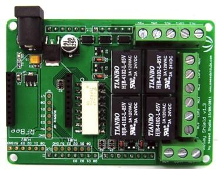
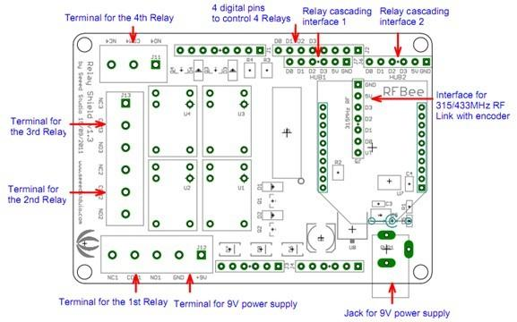
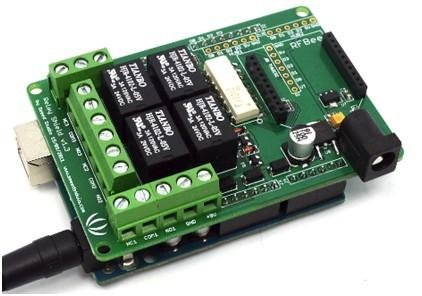
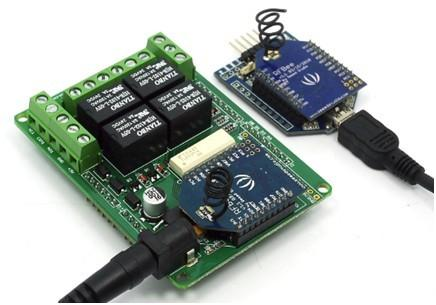
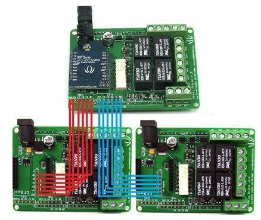
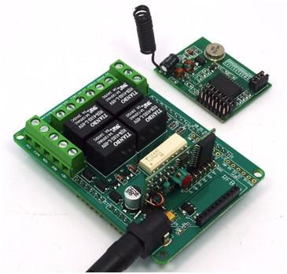

The Relay Shield is an Arduino compatible smart module with 4 mechanical relays providing an easy way to control high voltage. The max switching power is 35VDC 70W for each channel. It can be directly controlled by Arduino/Seeeduino through digital IOs with external 9V DC supply. With the XBee form socket and 315/433MHz RF module interface, the Relay shield can be remotely controlled, making it easy to use in robotics, industry control, smart houses etc.
Note: Take care the pins on the Shield should not be touched with USB connector of Arduino UNO when they are connected .

| Item | Min | Typical | Max | Unit |
|---|---|---|---|---|
| Voltage | 7 | 9 | 12 | VDC |
| Current | 8 | / | 250 | mA |
| Switching Voltage | / | / | 35 | VDC |
| Switching Current | / | / | 2 | A |
| Frequency Response | -1 | / | 1 | dB |
| Switching Power | / | / | 70 | W |
| Relay Life | 100,000 | / | / | Cycle |
| ESD contact discharge | ±4 | KV | ||
| ESD air discharge | ±8 | / | ||
| Dimension | 80.0x58.0x21.2 | mm | ||
| Net Weight | 31±2 | g | ||
Place 2 layers of electrical tape on the top of theArduino's usb connector. This will prevent the relay shield from making contact. Do not operate voltage more than 35V DC.

4 groups of channels for High voltage connection
Terminal 1:
COM1- Common pin
NC1- Normally Closed, in which case NC1 is connected with COM1 when D0 is set low and disconnected when D0 is high;
NO1- Normally Open, in which case NO1 is disconnected with COM1 when D0 is set low and connected when D0 is high.
Terminal 2-4 are similar to terminal 1, except that the control ports are D1-D3.
9V DC power supply connection
The function of the Terminal and the Jack is the same since they are internally connected, and you can choose either of them in needs.
IO controlling 4 on-board relays
D0-D3 4pins could be connected directly with Arduino pin number of 7-4, so that four relays could be easily controlled by the Arduino.
315/433MHz RF control interface
Together with pin of GND and 5V, they are the interface for 315/433MHz RF with encoder module (can be bought separately from Seeed Studio) to control the 4 relays remotely.
XBee form Socket for directly control by Seeed RFBee
The 4 relays can be directly controlled by the RFBee through the 4 DIO ports of RFBee (can be bought separately from Seeed Studio).
RFBee cascading control interface
As the RFBee has 12 DIO ports, 2 more Relay Shield (8 more relays) could be controlled through one RFBee. HUB1 and HUB2 are the drawn-out ports of RFBee (4 as a group), which is connected to 315/433MHz RF interface of the cascading Relay Shield.
Relay Shield could be directly controlled by Arduino.

Step1. Plug Relay Shield onto Arduino Duemilanove (or compatible) board;
Step2. Supply 9v DC power to Arduino;
Step3. Download the example code and run in Arduino IDE.
If using Arduino via its USB connection for power, you must also provide 9v DC power to the Relay Shield or the relays won't switch.
Relays 1-4 can be activated by setting Arduino ports 4-7 to output, and doing a digitalWrite(portNumber,HIGH).
Use COMx and either NCx (normally closed) or NOx (normally opened) connections to switch power through to the controlled device.

Step1. Download Arduino code for the slave and master RFBee.
Step2. Plug the slave RFBee to the Relay Shield.
Step3. Supply the 9VDC power to the Relay Shield.
Step4. Power the master RFBee with 3.3V by UartSBee or other adapter.

Step1. Download Arduino code for the slave and master RFBee.
Step2. Plug the slave RFBee onto the Relay Shield.
Step3. Connect the second and third Relay Shield to the mother shield by connecting 315/433MHz RF pins to hub1 and hub2. (Note: 5VDC and GND also need to be connected).
Step4. Supply the 9VDC power to the Relay Shield. (Note: the extended Relay Shields DO NOT need extra power supply).
Step5. Power the master RFBee with 3.3V by UartSBee or other adapter.

Step1. Plug and solder the Receiver onto the Relay Shield.
Step2: Supply the Relay Shield with 9VDC power.
Step3: Control the Transmitter.
| Revision | Descriptions | Release Date |
|---|---|---|
| Relay shield V1.0 | Initial public release | 03/31/2010 |
| Relay shield V1.1 | ||
| Relay shield V1.2 | ||
| Relay shield V1.3 |
|
12/01/2011 |